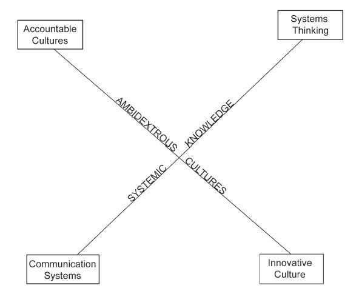

Organizations in the 20th century were built for stability and predictability. Organizations in the 21st century need to be both stable and change capable, what some refer to as “dynamically stable”.Abrahamson (2000). As a result, many organizations today tend to be overmanaged and underled as we transition to a global, information-based economy. This book provides insights, research, practical suggestions, and an approach to systematically assess your organization’s capacity for change using a valid and reliable survey instrument. Both management and leadership are essential skills required for 21st century organizations. This book provides some insights that can enable your organization to survive and prosper in the new millennium.
Figure 11.2 The Social Infrasctructure Required for Organizational Capacity for Change
